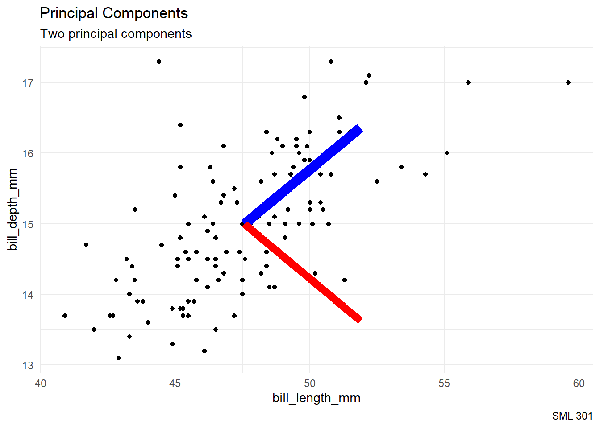
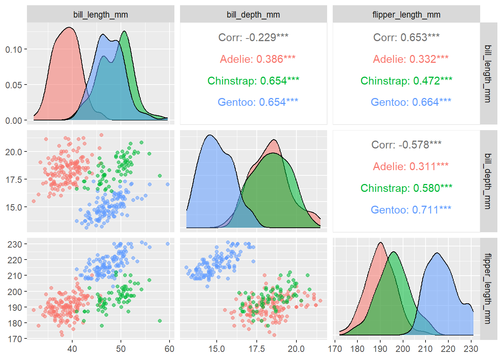
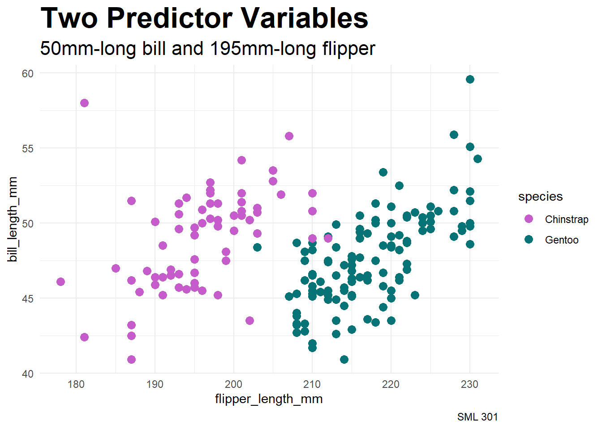

5: Dimension Reduction
Session 5: Dimension Reduction
Learning objectives:
- Introduce dimension reduction
- Explore PCA and LDA
Principal Components
Correlation
Finding Vectors
PCA Vectors
Standard deviations (1, .., p=2):
[1] 1.2860884 0.5881978
Rotation (n x k) = (2 x 2):
PC1 PC2
bill_length_mm 0.7071068 0.7071068
bill_depth_mm 0.7071068 -0.7071068Center
bill_length_mm bill_depth_mm
47.56807 14.99664 Scale
bill_length_mm bill_depth_mm
3.106116 0.985998 New Basis

PCA Pairs Plot
psych::pairs.panels(gentoo_pca$x)PCA Bi Plot
ggbiplot::ggbiplot(gentoo_pca,
obs.scale = 1,
var.scale = 1,
varname.color = "blue") +
labs(title = "First two principal components",
subtitle = "correlation: r = 0",
caption = "SML 301") +
theme_minimal()
DCP1
Principal Component Dimensionality Reduction
Correlations

Finding Vectors
PCA Vectors
Standard deviations (1, .., p=4):
[1] 1.6826865 0.8474021 0.5804124 0.3370418
Rotation (n x k) = (4 x 4):
PC1 PC2 PC3 PC4
bill_depth_mm -0.4095117 -0.80825505 0.3999776 0.1379922
bill_length_mm 0.4642354 -0.58111842 -0.6575242 -0.1202033
flipper_length_mm 0.5656175 -0.01845604 0.2734688 0.7777860
body_mass_g 0.5448509 -0.09319082 0.5769703 -0.6012971Center
bill_depth_mm bill_length_mm flipper_length_mm body_mass_g
17.11968 44.15663 201.95984 4282.53012 Scale
bill_depth_mm bill_length_mm flipper_length_mm body_mass_g
1.955837 5.490509 14.596950 832.983745 PCA Pairs Plot
psych::pairs.panels(penguin_pca$x)PCA Bi Plot
ggbiplot::ggbiplot(penguin_pca,
ellipse = TRUE, ellipse.prob = 0.95,
groups = train_data$species,
obs.scale = 1,
var.scale = 1,
varname.color = "blue") +
labs(title = "First two principal components",
subtitle = "captures 87.4 percent of the variance",
caption = "SML 301") +
theme_minimal()PCA Regression
Regression Task
- response variable:
body_mass_g - explanatory variables:
bill_depth_mm,bill_length_mm,flipper_length_mm
[1] "MSE: 135639.950195904"Dimensionality Reduction

PCA Model
\[\hat{y} = \beta_{0} + \beta_{1}P_{1} + \beta_{2}P_{2}\]
- \(P_{1}\): principal component 1
- \(P_{2}\): principal component 2
[1] "MSE: 256471.448353553"Activity: Literature Results
We will look at the results paragraphs for some of the most influential papers in the history of machine learning:
AlexNet
- ImageNet Classification with Deep Convolutional Neural Networks (2012)
GANs
- General Adversarial Nets (2014), Goodfellow et al.
TensorFlow
- TensorFlow: A system for large-scale machine learning (2016), Abadi et al.
Word2Vec
- Efficient Estimation of Word Representations in Vector Space (2013), Mikolov, Chen, Corrado, and Dean
DCP2
PCA Classification
Task

Classifier
- PC1 captures variance of the entire data set
Along PC1
Toward LDA
Covariance Revisited
- Naive Bayes ignored covariance (assumed conditional independence)
- discriminant analyses (generative approach): fit multivariate Gaussians
- want: dimensionality reduction
Fisher’s linear discriminant analysis (FLDA) is a hybrid of discriminative and generative techniques, but limited to
\[K \leq C - 1 \text{ dimensions}\]
- \(C\): number of classes in response variable
- \(D\): number of dimensions in projected space
FLDA Ideas
- \(S_{B}, S_{W}\): scatter matrices (estimate covariance)
- \(W\): projection matrix from \(D\) to \(K\) dimensions
Objective: maximize
\[J(W) = \displaystyle\frac{|W^{T}S_{B}W|}{|W^{T}S_{W}W|}\]
- eigenvalue scenario instead of gradient descent
LDA
Linear Discriminant Analysis takes the group structure into account
Projection
Comparison
DCP3
Ethics Enclave
Against Deepfakes
“There are three basic approaches for protecting ourselves against misinformation and disinformation
- “The first is technology. Tech companies might be able to use machine learning to detect online misinformation and disinformation.”
- “A second approach is governmental regulation. Some countries have already passed laws against creating or spreading fake news …”
- “A third and most powerful approach is education. If we do a good job of educating people in media literacy and critical thinking …”
Carl T Bergstrom and Jevin D West
Quo Vadimus?
due this Friday:
- Precept 3
- Pick Group Partners (survey)
I met Josh Starmer!
September 16, 2025
Footnotes
(optional) Additional Resources and References
Session Info
sessionInfo()R version 4.5.1 (2025-06-13 ucrt)
Platform: x86_64-w64-mingw32/x64
Running under: Windows 10 x64 (build 19045)
Matrix products: default
LAPACK version 3.12.1
locale:
[1] LC_COLLATE=English_United States.utf8
[2] LC_CTYPE=English_United States.utf8
[3] LC_MONETARY=English_United States.utf8
[4] LC_NUMERIC=C
[5] LC_TIME=English_United States.utf8
time zone: America/New_York
tzcode source: internal
attached base packages:
[1] stats graphics grDevices utils datasets methods base
other attached packages:
[1] lubridate_1.9.4 forcats_1.0.0 stringr_1.5.1
[4] readr_2.1.5 tidyverse_2.0.0 yardstick_1.3.2
[7] workflowsets_1.1.1 workflows_1.2.0 tune_1.3.0
[10] tidyr_1.3.1 tibble_3.3.0 rsample_1.3.1
[13] recipes_1.3.1 purrr_1.1.0 parsnip_1.3.2
[16] modeldata_1.5.0 infer_1.0.9 dplyr_1.1.4
[19] dials_1.4.1 scales_1.4.0 broom_1.0.9
[22] tidymodels_1.3.0 patchwork_1.3.1 palmerpenguins_0.1.1
[25] ggtext_0.1.2 GGally_2.4.0 ggbiplot_0.6.2
[28] ggplot2_4.0.0
loaded via a namespace (and not attached):
[1] mnormt_2.1.1 rlang_1.1.6 magrittr_2.0.3
[4] furrr_0.3.1 compiler_4.5.1 vctrs_0.6.5
[7] lhs_1.2.0 pkgconfig_2.0.3 fastmap_1.2.0
[10] backports_1.5.0 labeling_0.4.3 rmarkdown_2.29
[13] markdown_2.0 prodlim_2025.04.28 tzdb_0.5.0
[16] xfun_0.52 litedown_0.7 jsonlite_2.0.0
[19] psych_2.5.6 parallel_4.5.1 R6_2.6.1
[22] stringi_1.8.7 RColorBrewer_1.1-3 parallelly_1.45.1
[25] rpart_4.1.24 Rcpp_1.1.0 iterators_1.0.14
[28] knitr_1.50 future.apply_1.20.0 Matrix_1.7-3
[31] splines_4.5.1 nnet_7.3-20 timechange_0.3.0
[34] tidyselect_1.2.1 rstudioapi_0.17.1 yaml_2.3.10
[37] timeDate_4041.110 codetools_0.2-20 listenv_0.9.1
[40] lattice_0.22-7 withr_3.0.2 S7_0.2.0
[43] evaluate_1.0.4 future_1.67.0 survival_3.8-3
[46] ggstats_0.11.0 xml2_1.3.8 pillar_1.11.0
[49] foreach_1.5.2 generics_0.1.4 hms_1.1.3
[52] commonmark_2.0.0 globals_0.18.0 class_7.3-23
[55] glue_1.8.0 tools_4.5.1 data.table_1.17.8
[58] gower_1.0.2 grid_4.5.1 ipred_0.9-15
[61] nlme_3.1-168 cli_3.6.5 DiceDesign_1.10
[64] lava_1.8.1 gtable_0.3.6 pls_2.8-5
[67] GPfit_1.0-9 digest_0.6.37 htmlwidgets_1.6.4
[70] farver_2.1.2 htmltools_0.5.8.1 lifecycle_1.0.4
[73] hardhat_1.4.1 gridtext_0.1.5 MASS_7.3-65